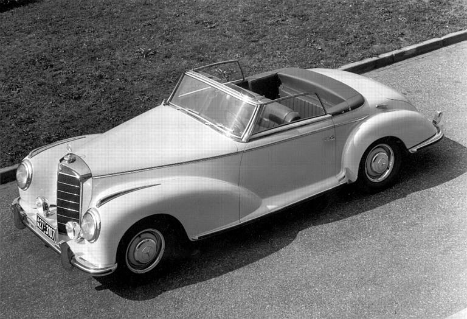

Models before 1955
1949 Mercedes S 170
In May 1949, the Mercedes-Benz 170S debuted for the first time. It can be considered that for the first time in the history of the company, the production of a completely new car of the "S" class began. The car was built and based on the standard version of the Mercedes 170B model car, but the new 170S version was longer and had a chrome finish on the body. The power of this car was 52 hp, and the maximum speed was 122 km / h.

1951 Mercedes S 220
In 1951, the Mercedes S170 was replaced by a new model, codenamed S220, which was equipped with a 2.2 liter engine with 80 hp. with a maximum speed of 140 km/h. The only thing was that in this new model some rough body elements appeared. So new but not very beautiful front fenders of the body were born into which the headlights were built. But, despite the not very aesthetic engineering solution, future car models evolved precisely with such car wings, in which, as you already understood, headlights were built.

1952 Mercedes S 300
Subsequently, the mass production of this car model was called the Mercedes-Benz S 300 "Adenauer". In 1951, at the Frankfurt Motor Show, this car became a "star", and this is not surprising, and here's why: 5 meters in length, power 115 hp, top speed 160 km / h. This car model was a class higher than other models with the letter "S", which ultimately influenced its cost, which was DM 20,000. By the end of 1962, 11,430 cars of this version were sold, both in a standard body and in a convertible body.
Models before 1965
1961 Mercedes SE 300
In 1959, the Mercedes company introduced a new car model with the then fashionable rear fenders, which were like a kind of "fins". In fact, it was still the same Mercedes S220, but the designation of this model was different. The car had a maximum speed of 200 km/h. The cost of the car is 23 thousand 100 German marks. In order to justify this huge amount for those times, the automaker did not spare a large number of chrome elements on its exterior.